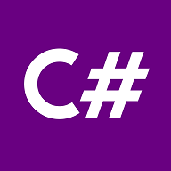
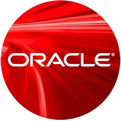

EyeCT4Events
Door EyeCT zijn wij ingehuurd om een applicatie te maken voor het Social Media Event. Deze is eerst gerealiseerd als een windows forms applicatie. Via gitlab hebben wij gewerkt in deze repository aan deze applicatie. We gaan nu verder met de webapplicatie van EyeCT4Events om het eerder aangeleverde prototype uit te werken.

